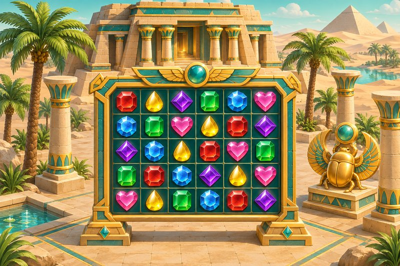

戰神賽特試玩總覽：官方管道、虛擬點數與試玩頁內容整理
搜尋戰神賽特試玩的人，想知道的多半是三件事：這是什麼遊戲、要去哪裡開、開了之後能做什麼。這篇依照戰神賽特資訊站試玩頁的內容，把這三件事整理成一份總覽，不談打法，只把試玩這件事本身講清楚。
這款遊戲的來歷
戰神賽特試玩的對象，是 ATG 電子開發的古埃及神話主題老虎機，二代全名是「戰神賽特2 覺醒之力」。它在 2025 年 7 月推出測試版，ATG 官方頁標示的發行日期是 2025 年 11 月 4 日。規格上屬於高波動機台，RTP 為 96.89%，最大倍率 81,000 倍（一代是 51,000 倍），而且沒有賠付線。
沒有賠付線的意思是，盤面採 6 欄 5 列共 30 格的隨處支付，同一種符號在任何位置湊滿 8 個以上就派彩，不用連線也不用相鄰。這和傳統連線型老虎機的看法差很多，也是許多人想先開試玩版看看的原因。
官方試玩管道有哪些特點
資訊站只建議走 ATG 官方的試玩管道，整理起來有幾個特點：
- 免費：不需要付任何費用，用的是系統給的虛擬點數。
- 免註冊：不用建帳號，也不用填個人資料。
- 免下載：採 HTML5 技術，瀏覽器直接執行，不用安裝 App。
- 跨裝置：iOS、Android、Windows、Mac 都能開啟。
為什麼不建議第三方試玩站
資訊站對第三方仿冒試玩站的態度很明確：不建議使用。理由有三個，版本可能是舊版、機率可能被改過、頁面可能藏有惡意程式。
兩個簡單的辨識點
遊戲畫面滑到最底端會顯示一組版本號，瀏覽器網址列也應該看得到安全鎖頭。兩樣都沒有的頁面，就要懷疑是仿冒的。
虛擬點數代表什麼
試玩給的是虛擬點數，這一點決定了戰神賽特試玩的性質。贏分不能提領、不能兌換，也不能轉成任何餘額，贏到一億和輸到歸零，在金錢上的意義完全一樣。點數用完時，重新整理頁面或關閉重開，通常會補回一組。
和正式版是同一套亂數
試玩版與正式版跑的是同一套亂數產生器（RNG），倍數球、男女賽特、購買特色保底等參數全部相同。每一轉獨立、沒有記憶，所以「試玩比較好中」是誤解；反過來說，試玩結果好，也不代表正式版會如此。
真正不同的地方
資訊站點出的差別在心理壓力：試玩沒有輸錢的壓力，決策容易放得很開；換成正式版，輸的時候人會卡住。
得分率也各自獨立
試玩與正式版進的是不同的機台池，選台介面上的得分率數據互不相通。
小樣本的限制
試玩時轉個幾十轉、幾百轉，樣本都很小，只能用來熟悉操作與節奏，不能拿來推論機率。RTP 是數十萬轉的長期統計值，無法預測單次結果；最大倍率則是理論上限，機率極低，不是目標。
試玩頁整理了哪些內容
資訊站的試玩頁標題是「戰神賽特2線上免費試玩體驗」，內容大致分成幾塊，可以照順序讀：
- 主畫面六大區塊：頂部跑馬燈、中央盤面、購買特色按鈕、右側按鈕區、ATG 標誌、底部資訊欄。
- 押注設定：加減號逐級調整，或按住押注框左右拖曳。
- 自動旋轉：可選 10、50、100、200、500、∞ 六種連轉次數。
- 購買特色三選一視窗：200x、500x、2,000x 三種方案，試玩時扣的是虛擬點數。
- ATG 選台系統：機台列表、空桌篩選與歷史數據的操作流程。
另外還有注單紀錄、第一次試玩的 30 分鐘流程與常見問題。要留意的是，購買特色在試玩裡不花真錢，但在正式版會把單次成本放大數百到數千倍，進入免費遊戲也不代表會有高倍數。
幾個容易忽略的小地方
戰神賽特試玩沒有固定的時間限制，但離線太久會被踢出，重開視窗後紀錄會清空、點數重新給一組。官方試玩的空桌也經常是滿的，遇到時可以換個時段、重新整理等位。這些都不影響機制，只是使用上的現實狀況。
最後提醒：試玩也要有界線
戰神賽特試玩不是進正式版之前的必經步驟，看完、玩過之後就此停下，也是完全合理的選擇。涉及金錢的遊戲可能造成財務損失，未滿 18 歲不得參與；成年人若打算接觸，請先訂好金錢與時間的上限，到了就停，不追輸，也不借錢玩，並事先確認所在地的法規。覺得自己停不下來時，可以撥衛生福利部安心專線 1925。
※ 本文僅為資訊整理，不構成任何建議；試玩使用虛擬點數，實際內容以官方說明為準。未滿 18 歲請勿參與，並請留意所在地法規。